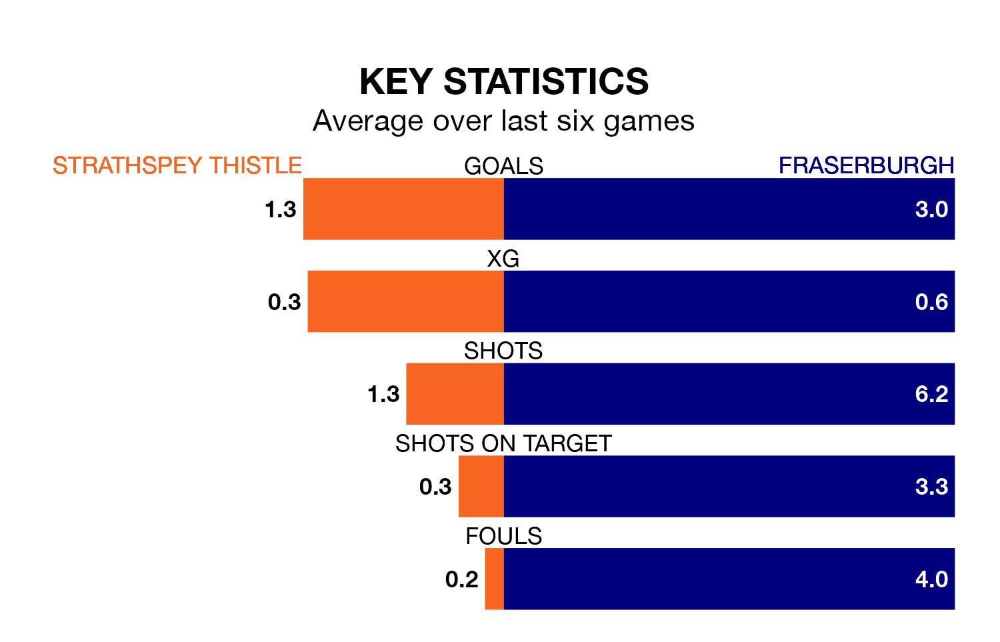

Relegation candidates Strathspey Thistle face a challenge against high-flying Fraserburgh at Seafield Park on Saturday.
Strathspey Thistle are rooted to the bottom of the Highland Football League table, and have picked up five wins and one draw in their 30 games to date.
The Broch, meanwhile, are second in the standings with 69 points, having won 22 and drawn three of their first 31 matches, and are three points behind table-toppers Brechin City.
With 84 goals in 31 games so far this season, Fraserburgh are the league's highest scorers with 2.7 goals per game. And they are conceding fewer than average, letting in 36 goals at a rate of 1.2 per game.
Strathspey Thistle, meanwhile, are below average scorers, with 1.1 goals per game, compared to a league average of 1.8. They have conceded 3.7 goals per game.
The hosts are in mixed form in the Highland Football League, with three wins and three losses from their last six games.
With six wins and no losses over that period, the Broch's form is much better – they have taken 18 points from 18, compared to Strathspey Thistle's nine.
In the last 10 years, Strathspey Thistle and Fraserburgh have played each other on 10 occasions. Fraserburgh won all of them.
On average, Strathspey Thistle scored 0.7 goals and the Broch 4.3 in those matches.
Their last meeting was on April 22, when Fraserburgh won 3-1 at home.
Strathspey Thistle's last match was on April 6, a 7-1 loss against Turriff United.
Fraserburgh beat Brechin City 4-2 last time out, also on April 6.
Updated: 14:47 (UTC), 09/04/24